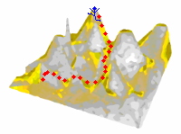

Basic
Enter search terms or a module, class or function name.
To view source codes, please visit the following link on GitHub:
Goto GitHub Repository
Contact Us!
Information Systems | School of Computing | National University of Singapore | 2014
Contents: